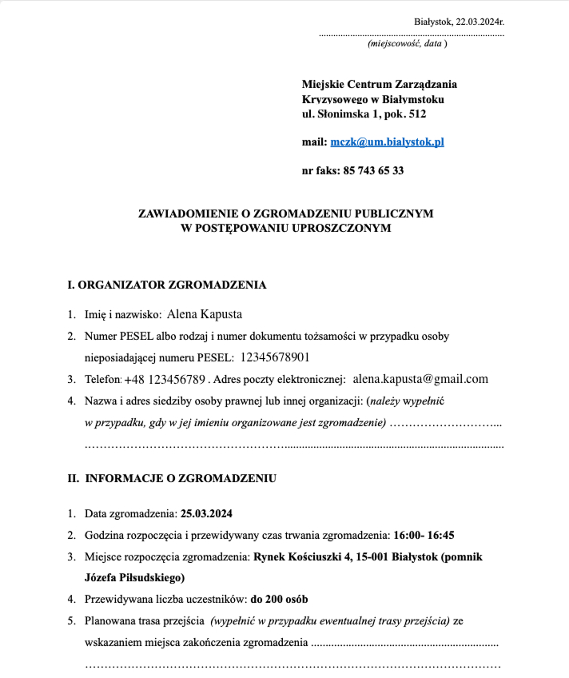
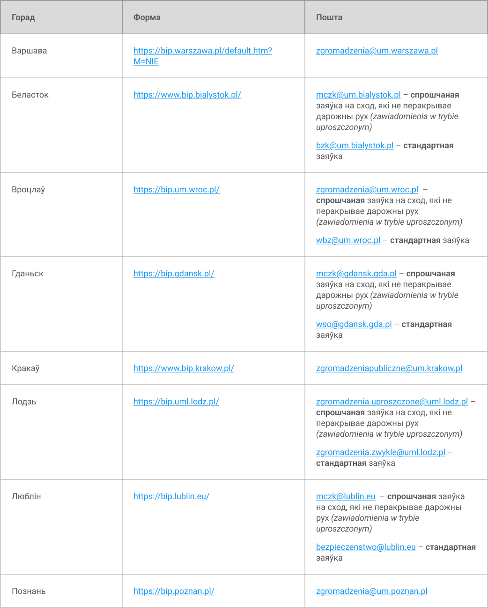

ПОЛЬШЧА
Мы намагаемся сачыць за зменамі і захоўваць “Дапаможнік” актуальным. Версія, якую вы бачыце зараз, створаная ў лютым 2025.

Святлана Галаўнёва, юрыстка «Вясны»
“Не толькі вы паведамляеце гміне пра правядзенне сходу, гміна таксама мусіць публічна паведаміць пра яго. Гэта частка абавязку дзяржавы спрыяць рэалізацыі нашых правоў і свабод”
У Польшчы не трэба атрымліваць дазвол на правядзенне мірнага схода — пра яго трэба проста паведаміць. Такі прынцып арганізацыі называецца паведамляльным, і ён закрэплены ў Польскім Законе аб сходах.
Паведаміць пра сход трэба адным з двух спосабаў: праз спрошчаную ці стандартную працэдуру:
- Спрошчаная працэдура выкарыстоўваецца, калі сход не стварае перашкодаў для дарожнага руху.
- Стандартная працэдура — калі правядзенне сходу ўскладніць дарожны рух.
Выключэнне — спантанныя сходы. Пра іх арганізацыю не трэба апавяшчаць адпаведныя органы наогул.
Спантанны сход (zgromadzenie spontaniczne) — сход, які адбываецца ў сувязі з раптоўнай і непрадказальнай падзеяй, звязанай з грамадскай сферай, правядзенне якога у любы іншы час было б бессэнсоўным ці малазначным для грамадскіх дэбатаў (п. 2 арт. 3 Закона аб сходах).
Напрыклад, спантаннымі сходамі былі пратэсты супраць забароны абортаў у 2020 і 2022 гадах.
- Спрошчаная працэдура
- Стандартная працэдура
Калі трэба падаць заяўку
Не раней за 30 дзён і не пазней за 2 дні перад запланаванай датай схода.
Які орган трэба апавясціць
Муніцыпальны цэнтр крызіснага кіравання, створаны пры вашай гміне (gminne (miejskie) centrum zarządzania kryzysowego).
Калі ў вашай гміне няма такога цэнтру, то апавяшчэнне трэба накіраваць да ваяводскага цэнтра крызіснага кіравання (wojewódzkie centrum zarządzania kryzysowego).
Што павінна быць ў апавяшчэнні
1. Інфармацыя пра арганізатара:
2. Інфармацыя пра сход:
3. Магчымыя пагрозы, якія на думку арганізатара, могуць з'явіцца падчас схода.
Узор заявы:
Як апавяшчаць
Паведаміць пра сход можна праз электронную пошту ці праз тэлефон.
Пры апавяшчэнні праз тэлефон трэба вусна падаць дадзеныя з чэк-ліста вышэй.
Каб апавясціць улады праз электронную пошту, трэба запоўніць і даслаць спецыяльную форму (zawiadomienie). Яе можна спампаваць са старонцы Biuletyn Informacji Publicznej мэрыі вашага горада (Urząd miasta).
Апавяшчэнне па спрошчанай працэдуры можна даслаць на пошту самой мэрыі і на пошту MCZK. MCZK – гэта дадатковая установа, якая выдае дазволы, і звароты яна разглядае хутчэй.
У гарадах, дзе ёсць пошта мэрыі і пошта MCZK, пісаць можна на любую з іх.
Важна: пісаць на абедзьве нельга, трэба абраць адну.
Якія паслугі і куды трэба аплочваць
Плаціць нічога не трэба. Адказнасць за выдаткі, звязаныя са сходам, нясе дзяржава – і вось чаму гэта добра:
"Дзяржава абавязаная забяспечыць і спрыяць свабодзе мірных сходаў, і прыборка тэрыторыі пасля сходу - частка гэтага абавязку. Патрабаваць дадатковай платы за прыборку пасля мірнага сходу – гэта як патрабаваць дадатковай платы за тое, каб камісія палічыла галасы падчас выбараў."
Святлана Галаўнёва, юрыстка «Вясны»
Калі трэба падаць заяўку
Не раней за 30 дзён і не пазней за 6 дзён перад запланаванай датай схода.
Які орган трэба апавясціць
Муніцыпальны оpрган – гміну (organ gminy).
"Але не толькі вы паведамляеце гміне пра правядзенне сходу, гміна таксама мусіць публічна паведаміць пра яго. Гэта частка абавязку дзяржавы спрыяць рэалізацыі нашых правоў і свабод.
Для людзей што збіраюцца на мірным сходзе важна магчымасць быць пабачанымі і пачутымі - менавіта гэтаму спрыяе распаўсюджванне гмінай інфармацыі пра запланаваны сход."
Святлана Галаўнёва, юрыстка «Вясны»
Што павінна быць ў апавяшчэнні
Інфармацыя пра арганізатара:
Інфармацыя пра старшыню сходу:
Інфармацыя пра сход:
Інфармацыя пра меры па забеспячэнні мірнага правядзення сходу, калі яны былі спланаваны арганізатарам.
Пісьмовая згода на выкананне абавязкаў старшыні сходу ў выпадку яго прызначэння. Калі заяўку падае фізічная асоба, зазвычай яна і будзе старшынёй, але можна запрасіць на гэтую пасаду і іншага чалавека. Тады ад яго будзе патрабавацца такі дакумент. Таксама гэты пункт актуальны, калі сход арганізуе юрыдычная асоба: арганізацыя мусіць вылучыць чалавека, які стане старшынёй і дасць на гэта пісьмовую згоду.
Калі вы падаяце заяўку праз электронную пошту, можна прымацаваць сканаваную копію гэтай згоды.
Фотаздымак арганізатара сходу або старшыні сходу, калі ён прызначаны.
Як апавяшчаць
пісьмова
па факсе
вусна для запісу
праз электронную пошту
Якія паслугі і куды трэба аплочваць
Плаціць нічога не трэба. Адказнасць за выдаткі, звязаныя са сходам, нясе дзяржава – і вось чаму гэта добра:
"Дзяржава абавязаная забяспечыць і спрыяць свабодзе мірных сходаў, і прыборка тэрыторыі пасля сходу - частка гэтага абавязку. Патрабаваць дадатковай платы за прыборку пасля мірнага сходу – гэта як патрабаваць дадатковай платы за тое, каб камісія палічыла галасы падчас выбараў."
Святлана Галаўнёва, юрыстка “Вясны”
Асноўныя правілы правядзення мірных сходаў
Калі і чаму сход можа быць забаронены
Не пазней чым за 96 гадзін (4 дні) да запланаванай даты сходу і калі:
Абавязкі арганізатараў
Правесці сход у адпаведнасці з законам і не дапускаючы шкоды з боку ўдзельнікаў.
Правы арганізатараў
Мірныя сходы могуць быць шумнымі, перашкаджаць транспартнаму руху, займаць цэнтральныя плошчы горада і агучваць ідэі, якія падабаюцца не ўсім. Гэта можна выклікаць назручнасці, але нашмат больш нязручнасцяў з’явіцца ў грамадства агулам, калі магчымасці пратэставаць не будзе.
Агульныя абмежаванні падчас схода
Удзельнікам нельга мець пры сабе зброю, выбуховыя рэчывы, піратэхніку ды іншыя небяспечныя матэрыялы або прылады.